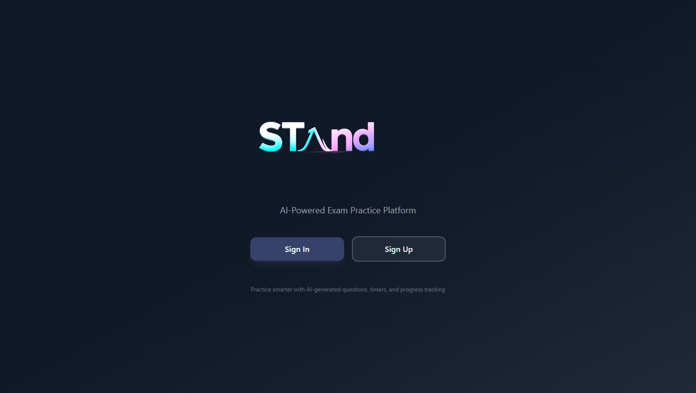
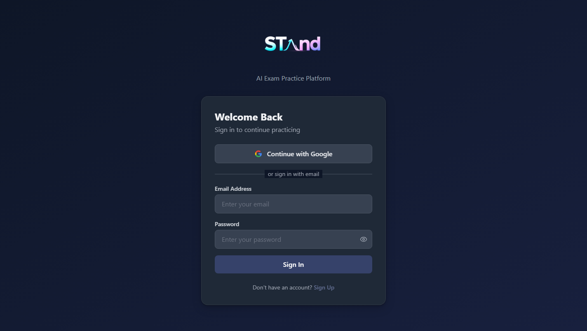
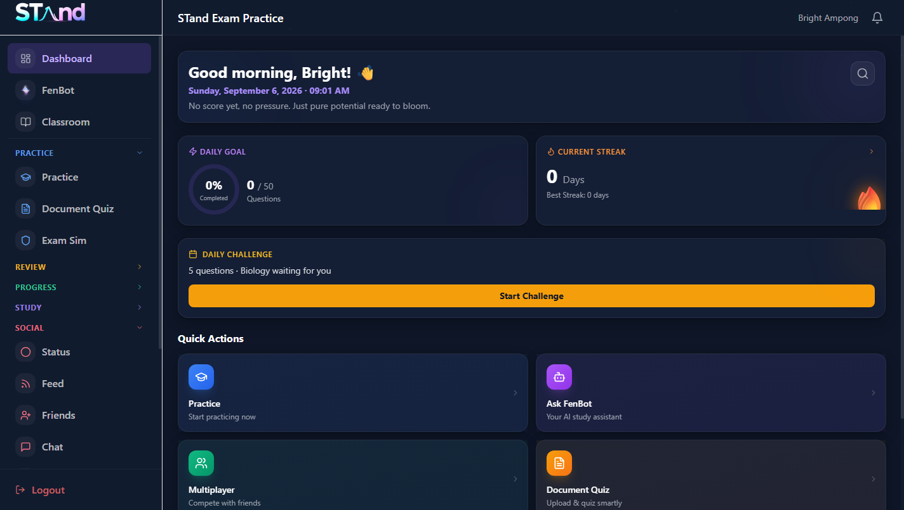
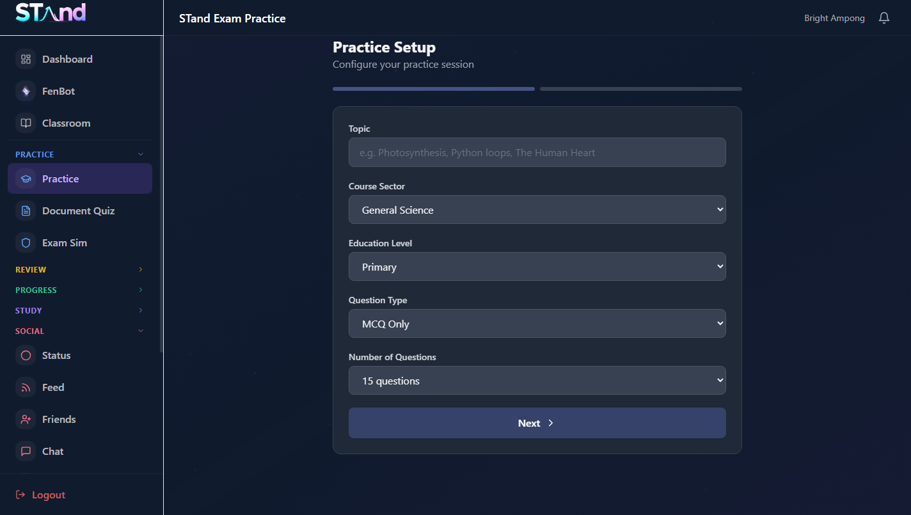
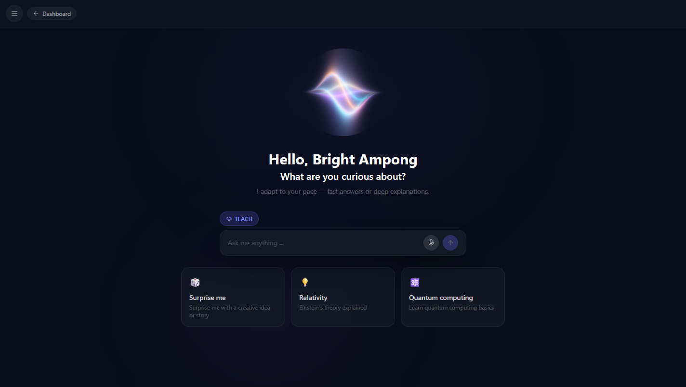
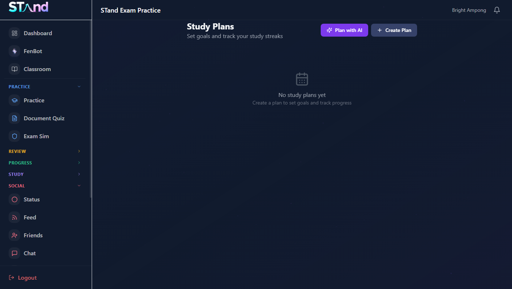
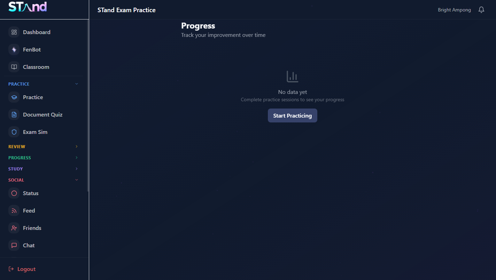

AI-powered exam practice platform — for students & teachers
Practice with AI questionsFenBot AI tutorClassroomsMultiplayer quizzes
September 2026 • Open http://localhost:8080 in any modern browser Sign in, practice, and track progress — no installation needed.
1Welcome to STand
What this guide covers and how to open the app.
STand helps you prepare for exams with AI-generated questions, an AI tutor called FenBot, real exam simulations, teacher-led classrooms, and multiplayer quiz battles with friends. Everything runs in the browser and your progress is saved to your account.
In this guide: 2 Getting started · 3 Practice solo · 4 FenBot tutor · 5 Study smarter · 6 Classroom for teachers · 7 Classroom for students · 8 Play & social · 9 Rankings & XP · 10 Behind the scenes & privacy · 11 FAQ & help
Opening STand
Open Chrome or Edge and go to the STand address (for example http://localhost:8080).
You will see the welcome screen below. Choose Sign In or Sign Up.
Sign up with email + password, or continue with Google.

Welcome screen — Sign In or Sign Up to begin.

Sign-in screen — use email or Continue with Google.
2Getting started
Your dashboard, navigation, and first steps.
After signing in you land on the Dashboard. It greets you, shows your daily goal, current streak, the daily challenge, and Quick Actions to jump anywhere. Use the left sidebar: Dashboard · FenBot · Classroom · Practice · Document Quiz · Exam Sim · Review · Progress · Study · Social.

Dashboard — daily goal, streak, daily challenge and quick actions.
Students — first 5 minutes 1. Open Practice and generate 15 questions on any topic. 2. Ask FenBot to explain one answer. 3. Check Progress to see your score.
Teachers — first 5 minutes 1. Open Classroom → Create Room. 2. Share the class code with students. 3. Add a topic and publish it.
3Practice solo
AI questions on any topic, exam simulation, and quizzes from your own documents.
Generate a practice set
Go to Practice and type a topic (e.g. “Photosynthesis”).
Pick course sector, education level, question type (MCQ, Theory, Fill-in-the-blank, True/False, Matching) and number of questions.
Press Next — STand generates the questions with answers and explanations.

Practice setup — topic, sector, level, question type and count.
More ways to practice:Document Quiz turns your PDF/DOCX notes into a quiz · Exam Sim recreates timed exam conditions · Bookmarks saves tricky questions · History replays past sessions · Search finds anything you practiced before · Import brings in your own question lists.
4Meet FenBot, your AI tutor
Ask anything — get fast answers or deep, step-by-step teaching.
Open FenBot from the sidebar. Type a question — or tap the microphone and speak. FenBot streams the answer live, can read it aloud, and remembers each conversation so you can return later.

FenBot — Teach mode, voice input, and suggested starters.
Mode
Use it when…
Teach
You want a full lesson: explanation, examples, checks.
Fast (Short / Medium / Detailed)
You want a quick answer before an exam.
Tips: ask follow-ups (“give me an example”, “quiz me on this”), regenerate an answer with ⟳, copy useful replies, and switch your language — FenBot answers entirely in it.
5Study smarter
Plans, progress charts, weak areas and achievements keep you consistent.

Study Plans — or generate one with AI via “Plan with AI”.
Study Plans Set goals and target dates manually, or press Plan with AI and describe your exam — STand drafts the schedule and streak targets.
Progress & Weak Areas Charts show scores over time per subject; Weak Areas lists topics to revisit, and Compare pits two sessions side by side.

Progress — scores, trends and mastery per subject.
Achievements reward streaks, perfect scores and multiplayer wins — collect badges as you learn.
6Classroom for teachers
Create a room, publish AI-assisted topics, assess and track the class.
Create Room — name it, set course, level and term. You get a class code to share.
Add topics — upload notes (PDF/DOCX) or write an outline; AI drafts objectives, lessons, examples, knowledge checks and practice questions for your review.
Assess — build assessments (same, randomized or pool modes), schedule and release them.
Track — attendance, announcements, per-student mastery levels, class analytics and AI insights on the dashboard.
Rooms support physical, fully-online and hybrid setups, with teacher / assistant / student roles.
7Classroom for students
Join with a code, learn topic by topic, take assessments.
Open Classroom → Join Room and enter the class code from your teacher.
Open Learn → Topics and read each lesson: objectives, key terms, simple + advanced explanations, examples and knowledge checks.
Take Assessments before the deadline; view results and feedback when released.
Plain-language notes on how STand works and where your data lives.
How the AI works: your questions go to a small proxy server included with STand, which forwards them to the AI provider. Your secret keys stay on the server — never in the browser.
Where data lives: accounts and sign-in use Firebase Authentication; classrooms, chats, posts and progress use Cloud Firestore; uploads use Cloud Storage. Your own browser also keeps a local copy so pages load fast.
Teachers: you control your rooms (members, roles, archived/draft states). Students: only joined rooms can see your classroom activity; profile, privacy and notification settings are under Settings → Privacy.
Technical stack for the curious: Vite + React + TypeScript + Tailwind CSS + Recharts + Firebase + Groq AI. Local dev runs the AI proxy on port 4200 and the web app on port 8080.
11FAQ & help
Quick fixes for the most common issues.
“Sorry, I encountered an error” in FenBot The AI proxy or key may be down. Make sure the backend server is running and the AI key is valid, then try again. Avoid spamming Regenerate while a reply is still streaming.
Blank page or endless “Loading…” Wait a few seconds on first load (the app compiles), then hard-refresh (Ctrl+Shift+R). Use Chrome or Edge.
Can’t join a classroom? Codes are uppercase — check for O/0 mix-ups, confirm you’re signed in, and ask the teacher that the room is active (not archived).
For the person running STand: start the AI proxy (node server.js, port 4200) and the web app (npm run dev, port 8080). Production needs the AI key set as an environment variable, then redeploy.
STand User Guide · September 2026 · Screenshots captured from the live app. Happy studying!